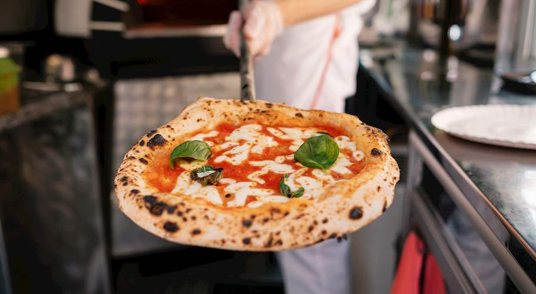

MARGHERITA PIZZA

Dish Origin
In June 1889 the pizzaiolo Raffaele Esposito, Pizzeria Brandi's chef, invented a dish called "pizza Margherita" in honor of the Queen of Italy,
Margherita of Savoy, and Italian unification, since toppings are tomato (red), mozzarella (white), and basil (green), ingredients inspired by the
colors of the national flag of Italy.
Ingredients
- 3 ½ cups all-purpose flour
- 1 teaspoon salt
- 1 cup water
- 1 (.25 ounce) package active dry yeast
- 1 pinch white sugar
- ¼ cup flour for dusting
- 2 cups pizza sauce
- 2 cups pizza sauce
- 20 leaves fresh basil
- Olive oil
- Sea salt to taste
Now it is time to prepare your pizza!
Directions
- Stir flour and 1 teaspoon salt in a bowl. Set aside.
- Mix water, yeast, and sugar in a large bowl. Let stand until yeast begins to form a creamy foam, about 5 minutes.
- Stir half the flour mixture into yeast mixture until no dry spots remain. Stir in remaining flour, 1/2 cup at a time, mixing well after each
addition. When dough pulls together, turn it out onto a lightly floured surface and knead until smooth and elastic, about 8 minutes.
- Lightly oil a large bowl, then place dough in the bowl and turn to coat with oil. Cover with a light cloth and let rise in a warm place
(80 to 95 degrees F (27 to 35 degrees C)) until doubled in volume, about 1 hour. Punch dough down, divide into 4 equal pieces, and form
each into a ball.
- Preheat oven with a pizza stone to 500 degrees F (260 degrees C).
- Stretch out and pat 1 dough ball to form a circle 10 to 12 inches in diameter. Place dough on a lightly floured pizza peel. Top with 1/2 cup of
tomato sauce and spread to cover within an inch of the edge of the dough. Arrange 5 slices of mozzarella cheese on top of the tomato sauce,
then place 5 basil leaves on top. Drizzle pizza with 1 tablespoon olive oil and sprinkle with sea salt to taste. Repeat for 3 remaining dough balls.
- Slide each pizza onto the pizza stone in the preheated oven. Bake until cheese is bubbly and the underside of the crust is golden brown, 5 to
7 minutes.